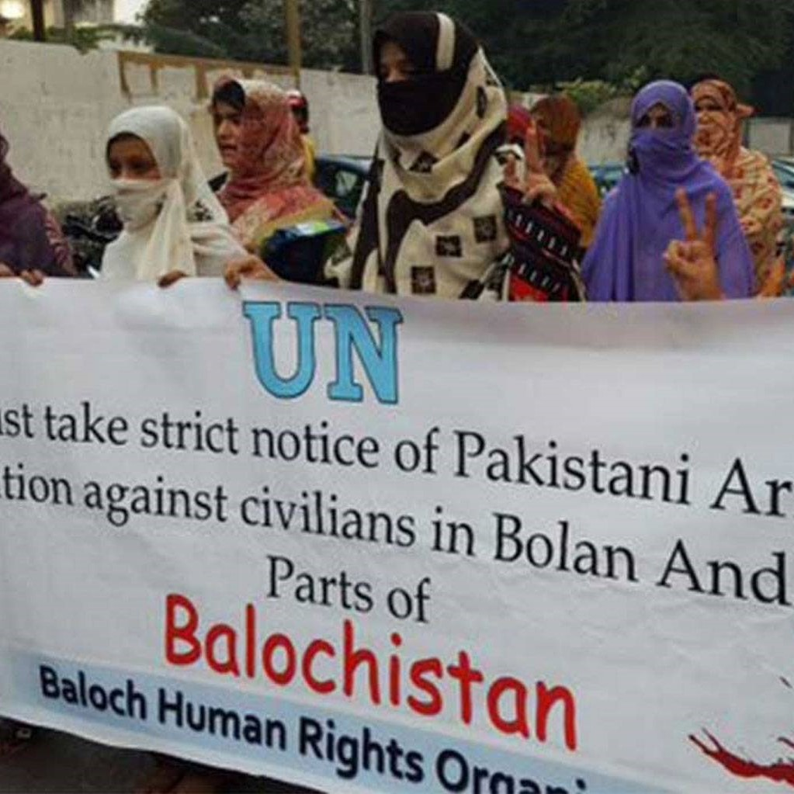

Brutality in Balochistan

How would you feel if you have to migrate from your houses, in your own country because you have raised
a
voice against injustice? How a father would feel if his son would be shot in a military coup in the name
of
jihad? How can anyone leave their thousands of years old culture and tradition, and adopt a culture of
subjugation, whose entire foundation is based on a lie? Where are the top leading human activists? Can’t
they perceive the fact that a country which claims it to be the dawn of justice in the east is violating
human rights, along with bestial murders, and unknown disappearances of innocent people who are on the
roads
against it?
One such tribe whose origins trace back to 7000-5500 BCE, whose voices went unheard from the last 150
years
is the Baloch tribe, residing in the western region of Pakistan. They have claimed a separate nation but
Pakistani regimes and armies always suppressed them. They have been vicious to the extent that they
didn’t
even leave children. They have wiped almost half of the population of Balochistan. Pakistani army
assassinated Nawab Akbar Shahbaz Khan Bugti who served as the Minister of State for Interior and
Governor of
Balochistan Province in Pakistan. He also became minister of state for defense in the cabinet of Feroz
Khan
Noon. They have assassinated their own, twice elected prime minister, Benazir Bhutto. And they talk
about
world peace.
The country whose prime minister himself admits that Pakistan is home to 30-40 thousand terrorists is
not
doing anything to put the malefactors behind bars.
Balochistan constitutes 44 to 47 percent of Pakistan’s landmass. In Balochistan alone, the total proven
oil
reserves are an estimated 313 million barrels, and proven gas reserves are estimated at 29.67 trillion
cubic
feet. According to another international assessment, Balochistan has 6 billion barrels of oil in
onshore/offshore and 19 trillion cubic feet gas reserves. The Pakistani government allowed a Chinese
mining
company to extend its work on a copper-gold mining project in the insurgency-marred western Balochistan
province. The resources of a region that claims itself to be a nation are being exploited by the Chinese
company! These are the heights of crimes on people and on the ancient land. When they protest, the
Pakistani
or Chinese army brutally, tear each and every bone apart from the bodies of protesters.
The hideous and
barbarous activities by the barbarians are punishable. The United Nations Human Rights Council must
contemplate the matter and would make it their topmost agenda. The thought of such a callous mentality
in
the 21st century is alarming. I would request the readers to please check on the internet, what exactly
one
of the ancient and oldest civilization is going through.
On the humanitarian ground, it is the duty of each and every human being to raise a voice against the
ongoing infernal abominable situation in Balochistan.